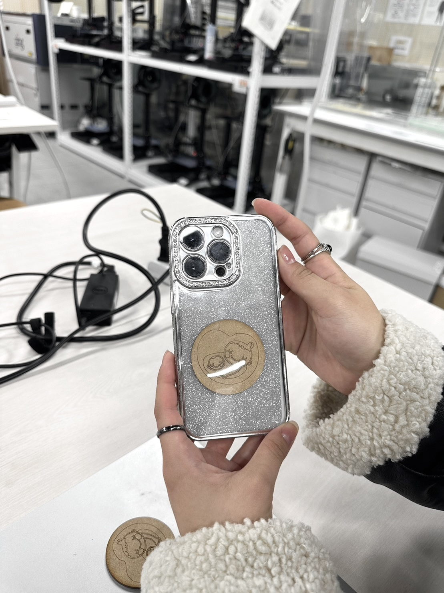
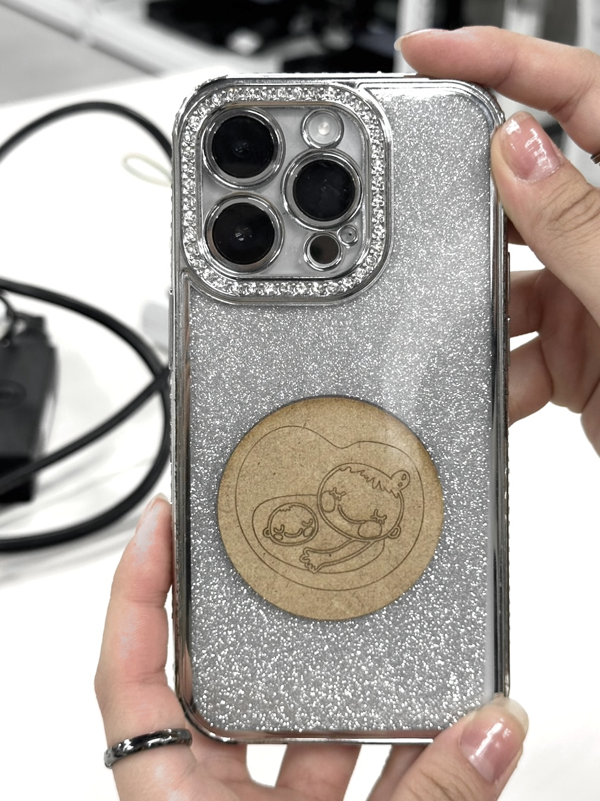

自分達が取り組むことにした問題の説明（スケッチなども含める）
私たちの班は個人で作業することになったので、私はどんなファッションの人でも持ち歩きやすく、絶対に忘れずに持ち歩くことができる
「マタニティーマーク」
を作成しました。
周りのママたちに「マタニティーマーク」について聞いてみると、良くも悪くも目立ちすぎることが多かったり、
バッグの素材や種類によって色があまり合わず逆に目立ちすぎたり、出掛ける日の気分によってバッグを変える時に
付け替えるのを忘れて出掛けてしまうことがあるという話を聞くことができました。
なので、日頃持ち歩く習慣があり、変える機会が少なく、ファッションによって持ち歩きずらいこともない部分に「マタニティーマーク」を取り入れることができればと思い、
スマホケースにはめて使うマタニティーマーク
を作ろうと考えました。
最終的に自分が作った製品プロトタイプの写真や動画(必ず使っているところを撮影する)


説明
作る上でマタニティーマークは板をレーザーカッターで加工して作成し、100均などに売っているクリアスマホケースに作成したマタニティーマークと
同じ大きさ(直径５cm)の穴を開けてはめ込むことができるようなスマホケースを作りたいと考えていました。
しかし、今回の提出期限までにスマホケースを準備して穴を開けることが難しかったので、今回はマタニティーマークを
ソフトタイプのスマホケースになら挟みやすい厚さの2.5mmの板で作ることにしました。
今回はマタニティーマークを直径５cmで作ったので、後からスマホケースに直径５cmの穴を開ければ作りたかったものができるので
使用機材
レーザーカッター
同じ班のメンバーのDesign for Othersのページへのリンク
ツナさんのページ
ニックネームがわかる方のサイトは貼り付けられましたが、
そのほかの同じ班の方のニックネームが分からず、それぞれのサイトのリンクを提出日までに載せることができませんでした。
金曜日の授業で分かり次第リンクを貼ります。